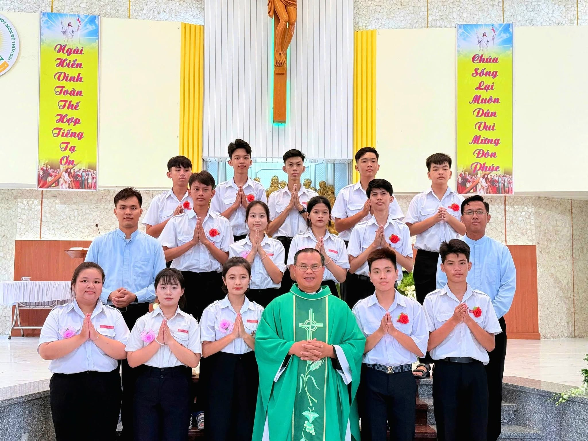

THÁNH LỄ RƯỚC LỄ TRỌNG THỂ

"Ai ăn thịt và uống máu Tôi thì ở lại trong Tôi, và Tôi ở lại trong người ấy." (Ga 6,56)
Trong bầu khí trang nghiêm và sốt sắng, Thánh lễ Rước Lễ Trọng Thể đã diễn ra, ghi dấu một cột mốc ý nghĩa trong hành trình đức tin của các em thiếu nhi.
Mở đầu Thánh lễ là đoàn rước Thánh giá và đèn hầu. Trước mặt Thiên Chúa và cộng đoàn, các em long trọng tuyên xưng đức tin và tuyên hứa, quyết tâm sống xứng đáng là người Kitô hữu. Qua lời huấn dụ của Cha sở Phanxicô Xaviê và bài giảng từ Tin Mừng, các em được mời gọi luôn gắn bó với Chúa Giêsu Thánh Thể.
Trong giây phút linh thiêng, các em sốt sắng đón nhận Mình và Máu Thánh Chúa Kitô, kín múc nguồn ân sủng cho hành trình đức tin. Thánh lễ khép lại với những bức ảnh tập thể, lưu giữ niềm vui của một ngày hồng phúc.
Xin chân thành cảm ơn Hội đồng Mục vụ Giáo xứ, quý Thầy Cô – Anh Chị Giáo lý viên, quý Huynh trưởng – Dự trưởng, Ca đoàn và toàn thể Cộng đoàn dân Chúa đã tận tình chuẩn bị và hiệp thông tham dự Thánh lễ.
Nguyện xin Chúa Giêsu Thánh Thể luôn đồng hành và chúc lành cho các em trên hành trình sống đức tin.